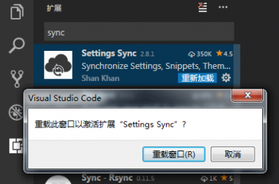
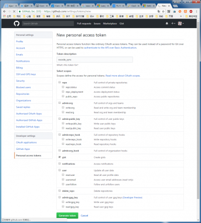
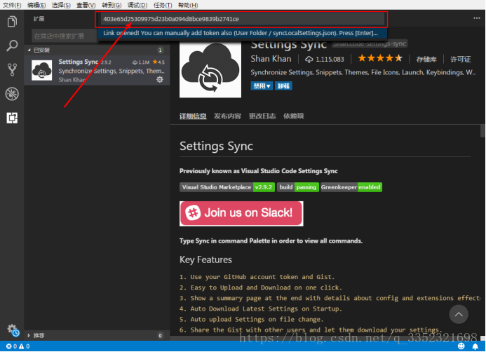
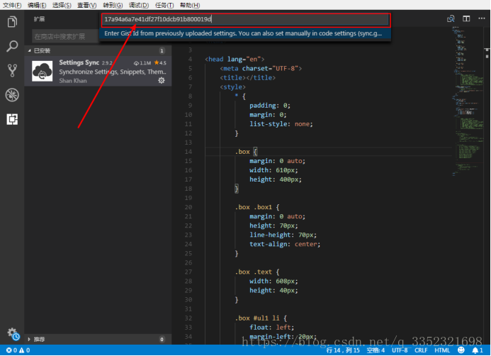
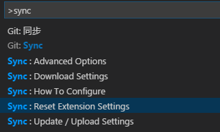
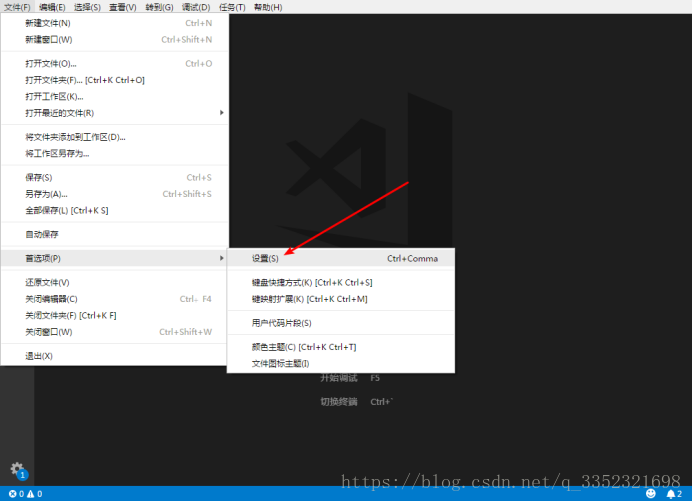
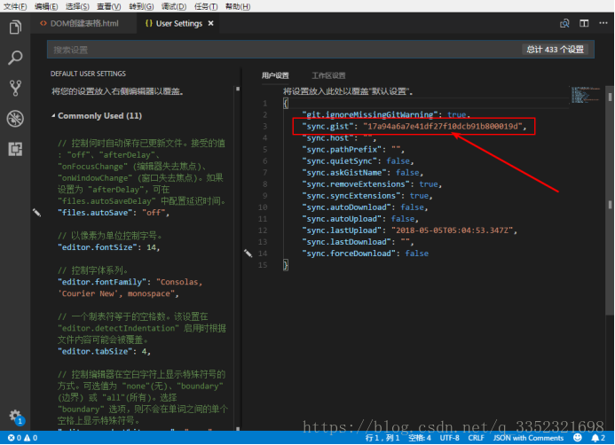

Setting Sync 可同步包含的所有扩展和完整的用户文件夹
设置文件
快捷键设置文件
Launch File
Snippets Folder
VSCode 扩展设置
工作空间
为什么需要Settings Sync
一开始不知道怎么备份vscode的配置,傻乎乎的把要用的插件抄下来,还有用户settings拷贝出来.每次换了电脑或者重装系统什么的都要重新备份.虽然来回调整的概率很低,但是突然哪天需要同步设置什么的就很麻烦了~至少我是在初期经常鼓捣这个编辑器,而且办公在家和公司是不同的设备~所以觉得还是很有必要的~
步骤如下
安装插件并重启VSCODE就不用说了(
安装VSCODE Settings Sync后重新加载)
重启后按快捷键 alt+shift+u (这里假设你第一次用)
- 它会弹出一个窗口对应的是github上面的创建个人gist的页面,如果未登录请先登录github.(
github创建gist来存储设置)
 - 保存后会生成一个key(
请牢记token id,后面将会用到)
- 它会弹出一个窗口对应的是github上面的创建个人gist的页面,如果未登录请先登录github.(
切回到vscode,他会有个输入区,就是存放刚才生成的key(
输入刚才生成的key)然后理论上他就开始对你
本机的配置进行一个扫描上传了,上传完成后,他会弹出控制台提示备份(上传)插件成功上传完成后会生成一个ID，要记下来
ID和token key不同接下来我们到另一台电脑上了
下载配置.同样的先安装Settings Sync插件,并重新加载.然后按快捷键alt+shift+d,就应该会弹出一个输入框,请在这里输入
之前保存下来的token key 和 (GIST ID),回车后将会自动下载之前上传的配置.

那么下载完成后,你这台电脑修改了相关配置再次上传就好了.是不是感觉方便多了~
其他的说明,如果在输入
gist id写错了,读取不到的情况下,大概需要重置设置,按F1,输入sync,这里有重置选项.试试看~ (重置sync的gist配置信息等)
如果忘记token可以到一下地址查看token
- Win下：
C:\Users\Administrator\AppData\Roaming\Code\User - Mac下：
~/Library/Application Support/Code/User/syncLocalSettings.json - Linux下：
~/.config/Code/User/syncLocalSettings.json
进入目录后，找到syncLocalSettings.json这个文件，查找token，并替换后面复制的值，就可以顺利进行同步配置信息了。
- Win下：
如果忘记gist id,可以到设置查看id


注意：(ID和key都要记下来)(恢复)插件需要用到 很重要!!! 建议上传到网盘 或者 笔记软件上
- 如果token无效，要在github上重新生成，先在
原平台修改并生成新的gist-id，再到新平台做上述操作。
https://gist.github.com/用户名/token值或gist-id值 可以查看相关数据；
还有些其他的功能例如自动上传下载等等,不是很常用,大家可以自行看看官方文档,基本的使用方法就是这样了,我写的如果有问题或者哪里不明白的可以留言- -.
插件地址：
https://marketplace.visualstudio.com/items?itemName=Shan.code-settings-sync